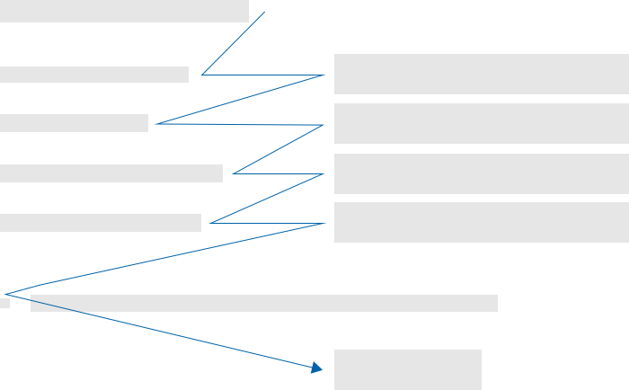
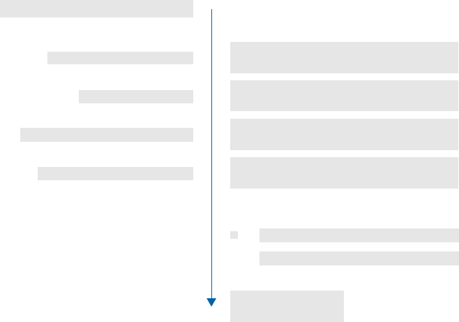

Forms
Try to find someone who likes filling forms, you won't. This is the reason why we built this guide on how to build less annoying and better performing forms for AXA.
Form Organisation
Organize your form as a conversation, use natural breaks and group related questions. Use the minimal amount of visual information to distinguish different content groups. Avoid visual clutter and don't interrupt scan lines.
UX Checklist
-
Remove unnecessary questions.
-
few short topics > one page
-
few topics with large number of questions > multiple pages
-
one topic with large number of questions > one page
-
Avoid visual clutter and don't interrupt scan lines.
-
Speak with one voice, despite questions from different people or departments.
Path To Completion
A straight path to completion is important for an efficient form filling process. Especially complex forms, e.g. claim reporting, require proper guidance. This guidance depends on a superb navigation, clear scan lines as well as an well-organized form. On long & paginated forms, an introductory page may be used to give upfront information about the form to follow.
Bad Scan Line
Good Scan Line
UX Checklist
-
On desktop, right align labels because this allows easier scanning and filling of the form.
-
On mobile, put the labels above the form element because horizontal space is limited and scanning stays very easy.
-
Provide a meaningful title for every form because users need to know they are at the right place
-
Remove anything from the site that could distract the user. The user needs support to concentrate. No ads!
-
Introductory pages are useful for long forms. Use them to tell the user about: -- How long does is approximately take to fill in this form -- Does the user need any special information or documents he can prepare?
-
Set the right tab-order to enable fast input. Great UX is in the details.
Inline Validation
Inline validation can provide several types of feedback:
-
confirmation that an appropriate answer was given
-
suggestions for valid answers
-
real-time updates designed to help people stay within necessary limits.
These bits of feedback usually happen when people begin, continue, or stop entering answers within input fields.
UX Checklist
-
Inline confirmations work best for questions with potentially high error rates, specific formatting requirements or actions like checking the availability of a username.
-
Inline suggestions work best when there is a large set of valid answers people can pick from.
-
When validating people’s answers inline, do so after they have finished providing an answer, not during the process.
-
If you need to change people’s responses into a specific format, make sure you do so after they have finished providing an answer, not during the process.
-
When input limits exist, communicate their boundaries using real-time, dynamic updates.